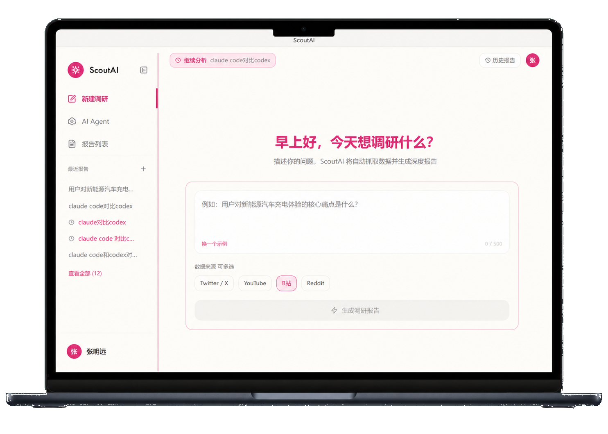
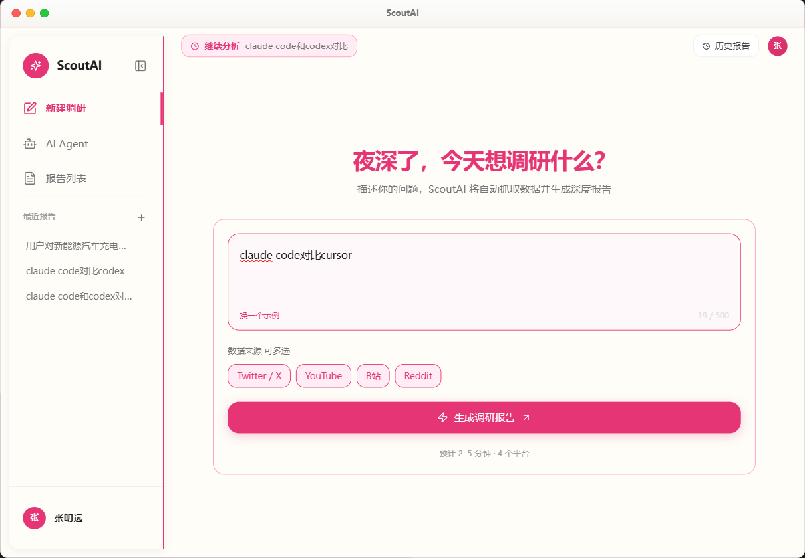
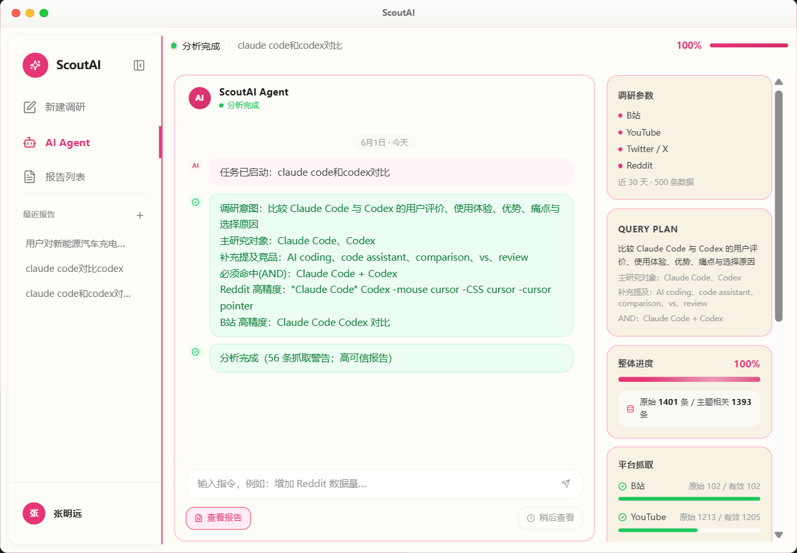
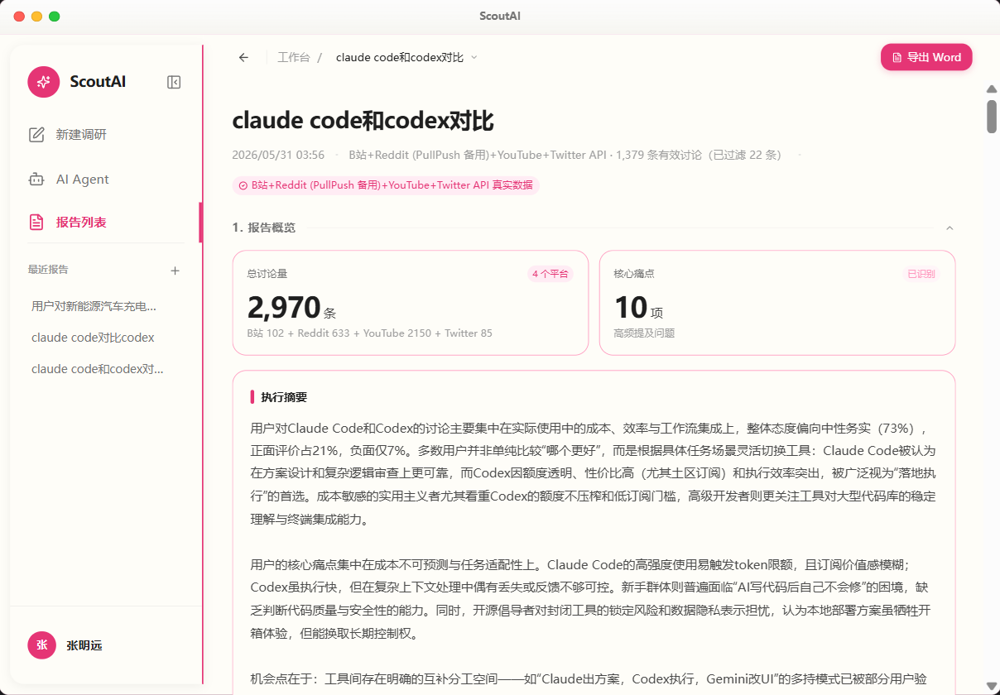
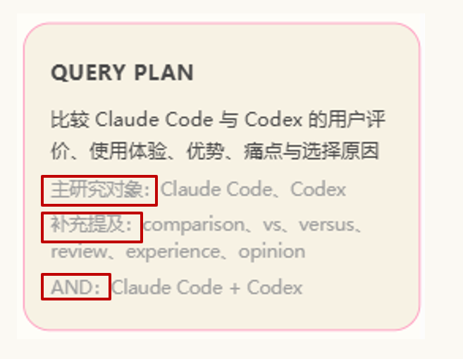
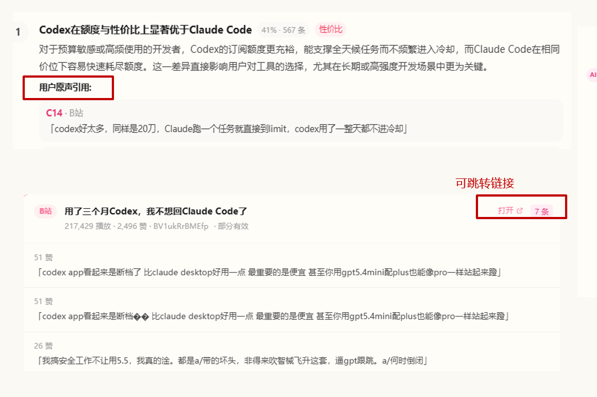
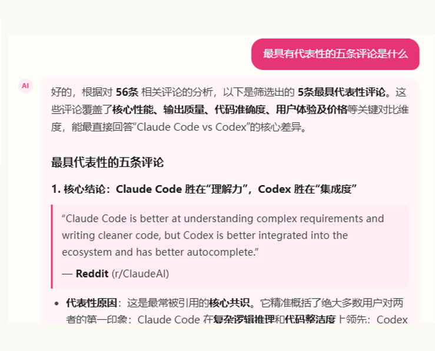
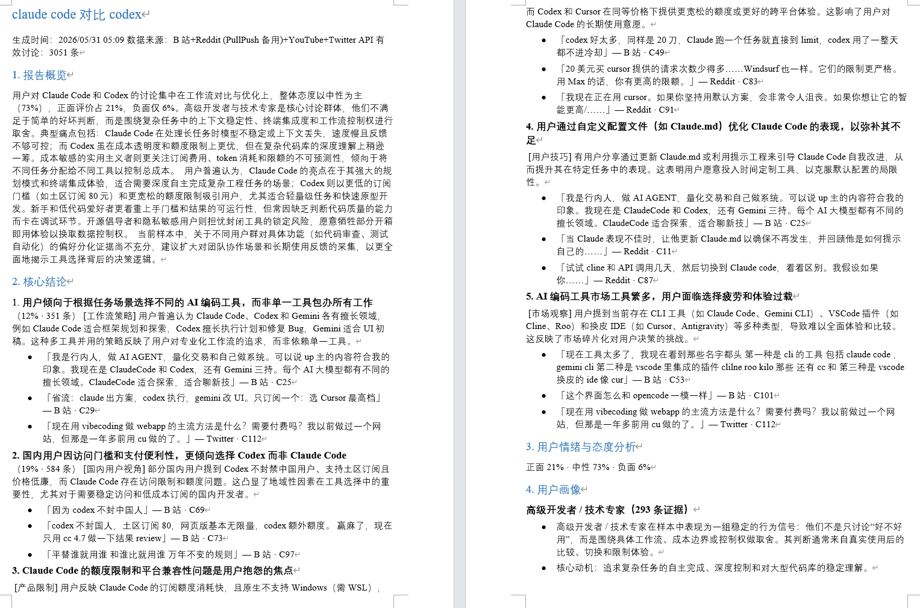

调研碎片化
用户反馈分散在不同平台、不同语言、不同语境里，产品判断很难从单一平台得出。Twitter、Reddit、B 站、YouTube 各自形成信息孤岛。
01 · 产品概况
用户自调研系统
输入一个研究问题，系统自动生成关键词、抓取跨平台用户反馈、清洗数据，并输出带原话证据的结构化用户研究报告。

设计机会：把"散落的声音"转化为"带证据链的判断"，让研究结论经得起追问。
用户反馈分散在不同平台、不同语言、不同语境里，产品判断很难从单一平台得出。Twitter、Reddit、B 站、YouTube 各自形成信息孤岛。
抓取、筛选、清洗、归类都需要大量人工时间，一个课题往往耗时 3-5 天，调研周期被严重拉长，难以快速验证假设。
很多调研报告只剩一句总结，缺少原始用户数据支撑。向团队汇报时难以回答"证据在哪""谁说的""在哪个平台"，缺乏说服力。
手工总结时容易注入主观判断，选择性关注符合预期的反馈，忽略真实用户表达中的反常识信号，导致错过关键洞察。
用于抓 B 站中文关键词和国外网站英文关键词。AI 提取 2-4 个短词，补充人群，并扩展同义词 / 近义词。
Twitter 和 YouTube 利用 API 抓取，Reddit / Bilibili 利用爬虫抓取，以获得上千条真实用户数据。
去掉表情、短句、垃圾内容，统计词频 Top 10，并为核心观点附上用户原话。



从输入研究问题开始，完整展示 ScoutAI 自动生成关键词、跨平台抓取用户反馈、清洗数据并输出结构化研究报告的全流程。视频时长约 3 分钟。
理解问题意图，确认主研究范围，补充次要关键词，并确认关键词之间的关系。AI 自动提取 2-4 个短词、补充人群标签、扩展同义词与近义词，确保跨平台搜索覆盖面。
每条结论至少引用 2-3 条来自不同平台的用户原话，原始数据带有原帖子链接，可跳转平台验证真实性，让调研结果经得起汇报时的追问。
基于已采集证据继续提问，快速定位关键评论与结论依据。用户追问"为什么得出这个结论""有没有反例"时，系统可按关键词和样本来源检索回应。



研究问题、关键词、数据来源与样本量总览
高频痛点词云、主题聚类与关键发现
情感分布、口碑趋势与正负面归因
典型用户角色、行为特征与使用场景
基于证据的改进方向与优先级排序
每条结论的用户原话、平台来源与链接

Twitter / YouTube / Reddit / Bilibili 在接口限制、反爬策略、关键词命中率上表现不一致，导致同一课题下不同平台返回数据量波动较大。
影响结果
数据量不稳定会影响报告覆盖度，部分结论可能出现平台样本偏向，进而影响用户对报告可信度的判断。
迭代方向
建立抓取监控与降级机制：记录成功率、有效样本数和失败原因；失败时自动切换备用关键词、降低抓取深度，或提示补充数据源。
当前 AI Agent 能围绕报告继续回答问题，但追问主要依赖大模型总结，容易泛化，不能稳定定位到具体用户原话和样本来源。
影响结果
用户追问"为什么得出这个结论""有没有反例""某类用户具体怎么说"时，系统需要更强的证据检索能力。
迭代方向
引入 RAG 机制：将评论、帖子、视频评论切分为可检索语料库，让二次问答先检索原始样本再生成回答，并附平台、原文和链接。
迭代优先级：先解决抓取稳定性（影响数据基础），再引入 RAG 增强追问能力（提升体验上限），最终将调研流程标准化为可复用的 Agent 模板。